Alpamayo-Edge：8B 多模态大模型的 Jetson Orin 量化部署实战
摘要
把 NVIDIA Cosmos-Reason2-8B（物理场景推理 VLM，非轨迹预测器，属"感知 + 推理 / 可解释"层）用 TensorRT-Edge-LLM 量化为 INT4 (AWQ) 与 INT8 (SmoothQuant)，部署到 Jetson Orin (sm_87) 端到端跑通推理；按标准服务指标（TTFT / TPOT / TPS / E2E）测性能功耗，并在官方 Cosmos-Reason1-Benchmark（带标准答案）实测量化对任务正确率的影响。零预算 · 零训练 · 全 Orin。
输入 / 输出（一句话）：输入 = 若干张图像 / 视频帧 + 一个自然语言问题；输出 = 一段自然语言回答（场景描述、风险判断、行动建议）。不输出轨迹或控制量。真实逐字实例与三个层次的 I/O 界定见 §2.1；模型结构 · 优化落在哪个模块 · 实验之间的逻辑见下方 总览（图 3、图 4）。
核心结论：
- 量化既提速又是 32GB 边缘的唯一可部署方案：decode 比 FP16 快 2.66×(INT4)/1.70×(INT8)、E2E 快 2.5×；FP16 在 32GB dog 上 build(峰 55GB)与载入(15GB 引擎+缓存)双双 OOM，只能在 64GB goat 跑，dog 部署 INT4/INT8。
- 量化无显著正确率损失：真实基准(n=210)上 FP16 76.2% / INT8 75.2% / INT4 73.8%，差异 全部统计不显著(McNemar p>0.4、95%CI 重叠)。即量化在任务正确率上几乎无损。
- 选型随负载形状翻转（§1.9，本轮修正）：输出 token < 输入 token / 83 时 INT8 更快，反之 INT4 更快。INT4 decode 快 1.61×/能效高 64%/显存省 42%；INT8 prefill 快 1.9×/能效高 2.3× ⇒ 长文本生成选 INT4；看图答短答案（本项目基准正是这种）选 INT8 —— n=210 基准实测 INT8 快 1.43×。
| 组件 | 输入 | 输出 |
|---|---|---|
| Cosmos-Reason2（本项目部署） | 图像 / 视频帧 + 文字问题 | 文字推理：场景描述、风险判断、行动建议 |
| Alpamayo 1.5 VLA（下游，正是建在本项目部署的 Cosmos-Reason2-8B 上；轨迹轨道暂缓） | 多相机图像 + 轨迹历史 | 轨迹（扩散式轨迹解码器） |
实验过程中的问题、根因与解决（含 FMHA 崩溃根因等）单独归档于 问题记录 PROBLEMS.md，本页不含。
总览：模型结构 · 输入怎么变成 token · 优化落点 · 实验逻辑（先看这四张图）
后面每一个实验都在说"某个模块占了 xx%"——没有一张模型结构图，这些数字挂不到任何东西上；而八个小节也不是一张清单，而是一条"上一轮的结论逼出下一轮的问题"的链条。所以先给四张地图：图 1 = 上游原始结构与我们部署形态的对应（先认清模型本身长什么样）、图 2 = 一张图片怎么变成 token（真正进网络的是多大的图、几个 token）、图 3 = 每个优化落在哪个模块、图 4 = 这些实验彼此之间的逻辑。图中所有数值取自设备上的实测 config、引擎文件与运行日志。
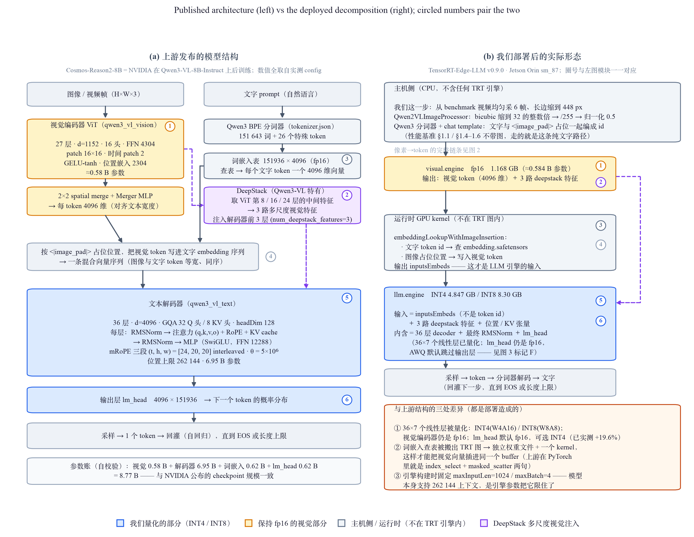
读法：左栏 = Cosmos-Reason2-8B 按其作者的口径（NVIDIA 在 Qwen3-VL-8B-Instruct 上后训练）：视觉编码器 ViT（
qwen3_vl_vision，27 层 · d=1152 · 16 头 · FFN 4304 · patch 16×16）→ 2×2 merge → 与文字 embedding 拼成一条序列 → 文本解码器（qwen3_vl_text，36 层 · d=4096 · GQA 32/8 · FFN 12288 · mRoPE [24,20,20]）→ lm_head；右栏 = 同一模型在 Orin 上被拆成的实际部件（主机侧前处理 / visual.engine / 运行时 kernel + 独立词嵌入权重 / llm.engine）图例：蓝 = 我们量化的部分；琥珀 = 保持 fp16 的视觉部分；灰 = 主机侧 / 运行时（不在 TRT 引擎内）；紫虚线 = DeepStack 多尺度视觉注入；①–⑥ 把两栏的同一模块系在一起
结果：参数账自校验 0.58 B（视觉）+ 6.95 B（36 层）+ 0.62 B（词嵌入）+ 0.62 B（lm_head）= 8.77 B，与 NVIDIA 公布的 checkpoint 规模一致；部署造成三处结构差异：① 36×7 个线性层被量化（视觉编码器与 lm_head 仍 fp16）、② 词嵌入查表被搬出 TRT 图成为独立权重 + 一个 kernel、③ 引擎构建时把输入长度钉死在 1024（模型本身支持 262144）
分析：这张图解释了两个最容易被误解的点。一是 DeepStack——视觉信息不只在序列开头进入模型，ViT 第 8/16/24 层的 3 路中间特征还会直接注入解码器前 3 层，所以视觉编码器不是"可插拔前端"，它与解码器是耦合的。二是"词嵌入不在 LLM 引擎内"的确切含义：不是没有词嵌入，而是查表被移出 TensorRT 图，变成运行时的一次 GPU gather（
embeddingLookupWithImageInsertion）+ 一个 1.245 GB 的独立权重文件；llm.engine 的输入是拼好的向量 inputsEmbeds，不是 token id——正因如此才能把视觉向量写进文字 embedding 的空位。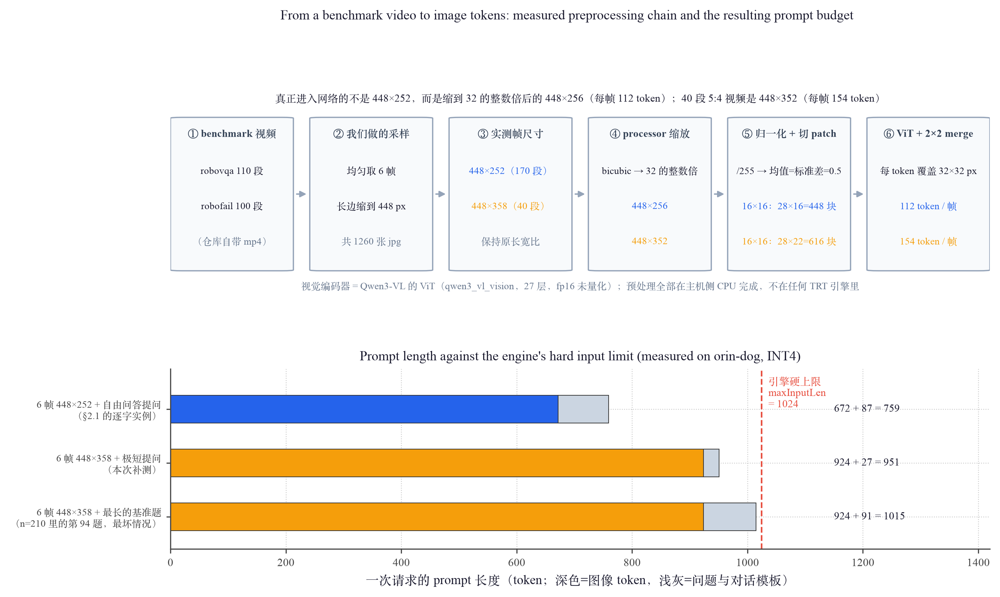
上半（读法）：六个步骤从左到右 = benchmark 视频 → 我们均匀采 6 帧并把长边缩到 448 px → 实测出现两种帧尺寸 →
Qwen2VLImageProcessor 把边长缩到 32 的整数倍 → 归一化并切 16×16 patch → ViT 编码后 2×2 merge 成 token；蓝字 = 448×252 的 170 段，橙字 = 448×358 的 40 段下半：横轴 = 一次请求的 prompt 长度（token；深色 = 图像 token，浅灰 = 问题与对话模板），竖轴 = 三种实测情形，红虚线 = 引擎构建时钉死的
maxInputLen = 1024结果：真正进入网络的不是 448×252，而是 448×256（28×16=448 个 patch → 112 token/帧）；40 段 5:4 视频是 448×352（616 patch → 154 token/帧）。规则是 token 数 =(W/32)×(H/32)，每 token 覆盖 32×32 px。实测 prompt 长度 759 / 951 / 1015，最长的一题（n=210 的第 94 题）距 1024 只剩 9 个 token
分析：这修正了此前"每帧 112 token ⇒ 最多 8 帧"的过度概括——112 只对 16:9 的帧成立，5:4 的帧是 154，6 帧就已经把引擎占到 99.1%，第 7 帧必然溢出。基准日志无截断告警、210 条全部返回，故已发布的正确率不受影响，但余量只有 0.9%，属于事后才发现的风险；要放更多帧必须用更大的
maxInputLen 重建引擎。另外注意口径：性能基准（§1.1、§1.4–1.6）一张图都不带，走的是纯文字路径，不经视觉编码器。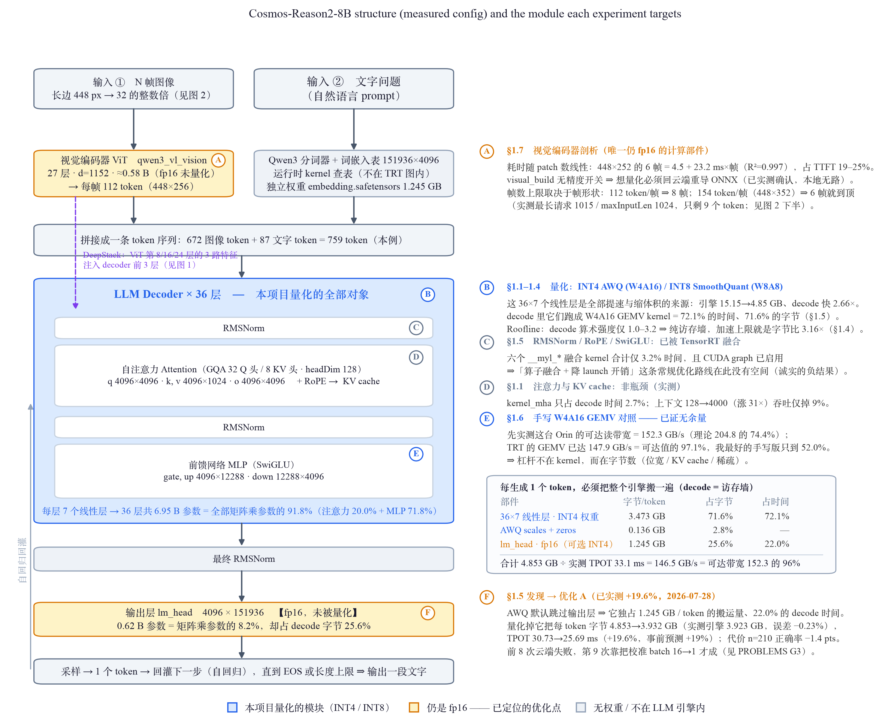
左栏（读法）：Cosmos-Reason2-8B 的真实结构，自上而下 = 两路输入 → 视觉编码器 ViT / 分词器+词嵌入 → 36 层 decoder → 输出层 lm_head → 采样回灌；框内为实测形状（36 层 · hidden 4096 · GQA 32/8 头 · FFN 12288 · vocab 151936）；紫虚线是 DeepStack（ViT 第 8/16/24 层的 3 路特征注入 decoder 前 3 层，见图 1），预处理与 token 数见图 2
右栏 A–F（图例）：每个字母把一个模块连到"我们在哪一节对它做了什么、实测占多少"；填色含义 = 蓝：本项目量化的模块 / 琥珀：仍是 fp16，已定位的优化点 / 灰：无权重或不在 LLM 引擎内
结果：被量化的只有 decoder 里 36×7 个线性层 = 6.95 B 参数（全部矩阵乘参数的 91.8%），它们在 decode 占 72.1% 的时间；lm_head 只占 8.2% 的参数，却占 25.6% 的字节、22.0% 的时间，且完全未被量化；视觉编码器（≈0.58 B，fp16）占 TTFT 19–25%；RMSNorm / RoPE / SwiGLU 已被 TensorRT 融合，合计仅 3.2%
分析：这张图回答"优化为什么只能往这两处去"。右下角的字节账是关键：decode 每生成 1 个 token 就要把整个引擎搬一遍，4.853 GB ÷ 实测 33.1 ms = 146.5 GB/s，已达这台机器可达带宽（152.3 GB/s）的 96% ⇒ 搬运效率已无余量，剩下的收益只能来自"让要搬的字节变少"，即图中两块琥珀色（lm_head、视觉编码器），而不是重写 kernel（§1.6 已实测证否）。
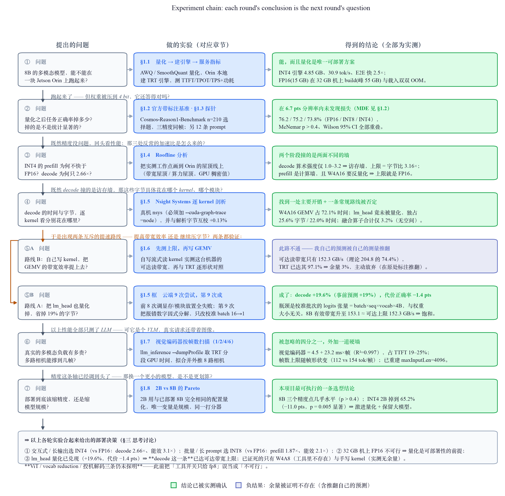
读法：一行 = 一轮实验，左→右 = 提出的问题 → 做的实验（对应章节）→ 实测结论；两行之间的斜体字是这条链的关键——上一轮的结论具体逼出了什么新问题
图例：绿 = 结论已被实测确认；蓝紫 = 负结果（余量被证明不存在）；琥珀 = 尝试过但没做成，留作未验证的预测；⑤A / ⑤B 是同一处发现分出的两条互斥路线，故并列
结果：七轮串成一条链——能不能跑(§1.1) → 压了还准不准(§1.2–1.3) → 加速比为何是这个数(§1.4) → 字节花在哪个 kernel(§1.5) → 两条提速路线各自的下场(§1.6 / lm_head) → 真实多模态负载多贵(§1.7) → 该缩精度还是缩模型(§1.8)，最后合成一条部署决策
分析：链条里有两次转向完全是被数据逼出来的：§1.4 判定 decode 撞的是访存墙，才使 §1.5 的逐 kernel 字节归因成为必做项；而 §1.5 量出 GEMV 只有理论峰值带宽的 72%，我据此预测手写 kernel 能 +10%——§1.6 先测出真实上限后，这个预测被我自己的测量推翻，并保留在原处。也正因为 kernel 这条路被关掉，两个尚未兑现的收益（量化 lm_head、量化视觉编码器）才有了明确的优先级。
一、核心结果
📊 图表可点击放大（再点任意处或按 Esc 还原）。不熟悉指标可先展开下面的说明，或见「方法细节」。
▸ 指标怎么读（点开）
| Prefill 预填充 | 一次性并行"读完"输入 prompt 的所有 token（读题阶段）。计算密集，看整体处理速度。 |
| Decode 解码 | 逐个 token 自回归生成输出（答题阶段），每步只出 1 个 token。访存密集——每步都要把权重从显存搬一遍，权重越小越快。 |
| TPS (tokens/s) | 吞吐 = 每秒处理/生成的 token 数，越高越好。本文性能主指标。 |
| TTFT 首 token 延迟 | Time To First Token，从请求到吐出第一个 token 的时间 ≈ 输入 prompt 的 prefill 耗时；随输入变长而增大。交互式体验的关键。 |
| TPOT / ITL 每 token 延迟 | Time Per Output Token（= Inter-Token Latency），decode 阶段生成每个 token 的耗时（ms），越低越流畅；输出 TPS ≈ 1000 / TPOT。 |
| E2E 端到端延迟 | 一次完整请求耗时 = TTFT + 输出token数 × TPOT。生成越长，decode(TPOT) 越主导。 |
| tokens/J 能效 | 每焦耳能量处理的 token 数（= TPS ÷ 功耗 W）。越高越省电，是电池/散热受限的边缘设备的关键指标。 |
| VRAM 显存 | 引擎加载后占用的显存。Orin 是 CPU/GPU 共享的 29 GB "统一内存"。 |
| perplexity 困惑度 | 模型对一段文本的"意外程度"，越低=越符合模型预期。这里用 FP16 原模型给量化输出打分，增幅越小 = 量化越保真。 |
| 一致前缀 | 贪心解码下，量化输出与 FP16 输出逐 token 相同的最长开头长度。 |
| W4A16 / W8A8 | 量化位宽记法：权重 4bit·激活 16bit（AWQ）／ 权重 8bit·激活 8bit（SmoothQuant）。 |
| 视觉编码器（ViT） | Vision encoder。多模态模型里把图像编码成 token 的那一半（本模型 qwen3_vl_vision，27 层）。LLaVA 系代码常称 vision tower，本文统一用"视觉编码器"，不用直译"视觉塔"。 |
| DeepStack | Qwen3-VL 的多尺度视觉注入：视觉编码器第 8/16/24 层的中间特征直接注入文本解码器前 3 层（见图 1）。 |
| 算术强度 AI | Arithmetic intensity = 每字节数据能做多少次运算（FLOP/byte）。它决定一个阶段是被算力还是被带宽卡住（见图 12）。 |
| 理论峰值 vs 可达上限 | 前者是规格书数字（本机 DRAM 204.8 GB/s），后者是这台机器实测真能跑到的（152.3 GB/s）。算优化余量必须用后者——用前者会高估（§1.6）。 |
| 精度损失（pts） | 正确率的百分点差（业内口语称"掉点"）。本文统一写"精度损失"，并区分它与 perplexity 的上升。 |
| MAXN · sm_87 | MAXN = Orin 最高性能功耗模式；sm_87 = Orin GPU 的 CUDA 架构代号（Ampere）。 |
1.1 性能：延迟 / 吞吐 / 显存 / 功耗 / 能效

横轴：Prefill(512 输入) / Decode(每 token) 两阶段（三精度含 FP16，goat 同机）
竖轴：吞吐 TPS (tokens/s)
结果：prefill INT8 比 FP16 快 1.87×、INT4≈FP16；decode INT4 快 2.66×、INT8 快 1.70×（vs FP16）
分析：反常点——INT4 prefill 并不比 FP16 快：prefill 计算密集，INT4(AWQ) 要先把 4bit 权重反量化回 fp16 再算，反量化开销抵消了小权重优势；INT8 用原生 int8 张量核直接快 1.87×。decode 访存密集(每步搬全部权重)，权重越小越快 → INT4(4.8GB) 2.66×。⇒ prefill 选 INT8，decode/交互选 INT4。

横轴：Prefill / Decode（三精度含 FP16，goat 同机）
竖轴：左=整机功耗(瓦，三电轨之和)，右=能效 tokens/J (对数轴)
结果：decode 能效 FP16 0.42 / INT8 0.90 / INT4 1.31（INT4 比 FP16 高 3.1×）
分析：反常点——INT4 prefill 功耗反而最高(62.6W>FP16 57.1)、prefill 能效反而最低(26.9<FP16 30.1)：AWQ 反量化让 GPU 在计算密集的 prefill "忙而无增益"→更费电。但 decode 是访存主导，INT4 权重小、每 token 搬运能耗低 → 能效 3.1× FP16。⇒ AWQ 的能效收益全在 decode，不在 prefill。

横轴：上下文长度(past-KV token 数，128→4000)
竖轴：INT4 decode 吞吐 TPS (tokens/s)
结果：上下文涨 31× 吞吐仅降 9%
分析：decode 延迟由权重搬运主导、注意力占比小，故长上下文几乎不掉速 ⇒ 适合长对话/长文档

横轴：三精度 LLM 引擎
竖轴：引擎体积(GB)，红虚线=dog 统一内存 30GB
结果：FP16 15.2 / INT8 8.3 / INT4 4.8 GB（INT4 = FP16 的 32%）
分析：INT4/INT8 引擎在 dog 从容运行；FP16(15GB) 在 dog 连载入都 OOM(引擎+其文件缓存≈30GB 到顶)、build 更需 55GB → FP16 只在 64GB goat 跑。省下的显存可留给更长 KV cache 或多模型并存。
| 指标（单位） | FP16 † | INT4 (AWQ) | INT8 (SmoothQuant) |
|---|---|---|---|
| TTFT 首 token 延迟（ms）512-token 输入 prefill | 298.1 | 301.0 | 157.5 |
| TPOT / ITL 每输出 token 延迟（ms）decode @ pastKV 512 | 89.3 | 32.3 | 50.7 |
| 输出吞吐 · decode（tok·s⁻¹） | 11.2 | 30.9 | 19.7 |
| Prefill 吞吐（tok·s⁻¹） | 1718 | 1701 | 3252 |
| E2E 延迟（s）512-in + 128-out | 11.7 | 4.6 | 6.9 |
| Prefill 能效（tok·J⁻¹）dog / goat | — / 30.1 | 27.5 / 26.9 | 62.8 / 62.0 |
| Decode 能效（tok·J⁻¹）dog / goat | — / 0.42 | 0.82 / 1.31 | 0.50 / 0.90 |
| 引擎体积（GB）加载后显存占用 ≈ 此值（Orin 统一内存） | 15.2 dog build / 载入均 OOM | 4.8 | 8.3 |
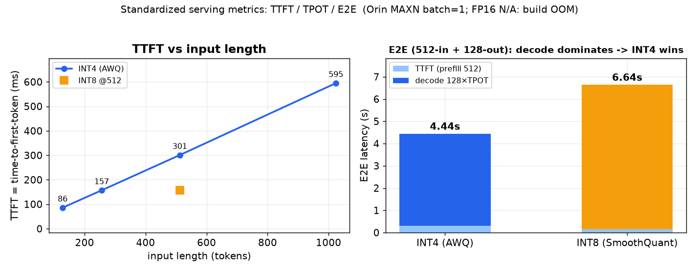
横轴：左=TTFT/TPOT 两指标×三精度，右=三精度
竖轴：左=延迟(ms)，右=E2E(s)
结果：decode INT4 比 FP16 快 2.66×、INT8 1.70×；prefill INT8 快 1.87×、INT4≈FP16;E2E(512+128) INT4 比 FP16 快 2.5×(11.7s→4.6s)
分析：decode 访存密集→权重越小越快(FP16 16GB→INT4 4.8GB);prefill 计算密集→INT8 原生 int8 核占优、INT4 反量化开销抵消
† FP16 在 orin-goat（64 GB）build + 跑（dog 无法 build）；延迟 / 吞吐的 INT4 / INT8 为 orin-dog 数据，两机 INT4 / INT8 实测差异 <3%（已跨设备复现），加速比取 goat 同机测量。能效 tok·J⁻¹ 两机分列（dog / goat）：整机功耗基线随设备不同，跨机差异大于延迟的 3%（如 decode INT4 dog 0.82 vs goat 1.31），故不合并；图 6 为 goat 同机三方，与本表 goat 列一致。
补充 sweep 与多模态（INT4）：
- Prefill inputLen 128→1024：吞吐 1485→1720 TPS（1024 趋稳），batch=1 已算力饱和、批处理无聚合增益。
- Decode pastKVLen 128→4000（涨 31×）：吞吐仅掉 9%，长上下文扩展性好。
- 多模态图像路径（视觉编码器 + deepstack + INT4 LLM）端到端验证正确。
1.2 精度：真实基准任务正确率（vs FP16）
在官方 Cosmos-Reason1-Benchmark（robovqa 子集，110 道选择题带标准答案）上实测任务正确率——具体场景 + ground truth，效果指标有实际意义。视频按 6 帧（≤448px）采样作多图，FP16/INT8/INT4 用同一批帧，精度损失严格可比。
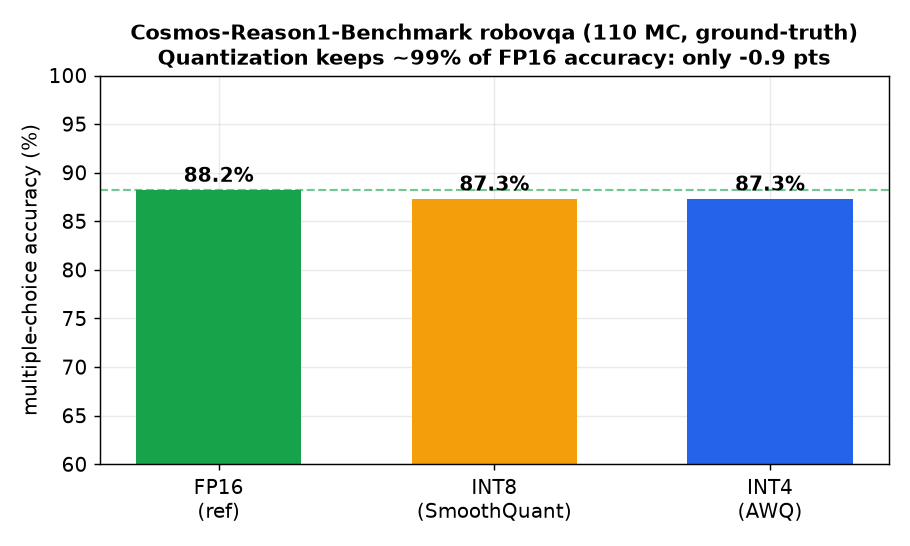
横轴：三种精度（FP16 参考 / INT8 / INT4）
竖轴：多选题任务正确率 %（误差棒=Wilson 95% 置信区间，绿虚线=FP16 76.2%）
结果：n=210（robovqa 88.2% + 更难的 robofail 63%）FP16 76.2%、INT8 75.2%、INT4 73.8%；三者 CI 重叠、McNemar p>0.4 → 差异统计不显著
分析：即使扩到 210、加入更难子集，量化仍无显著任务正确率损失，且分辨不出 INT4/INT8。二选一 MC 使 CI 仍 ±5.7；要更细分辨需上千样本或更难多选题（其余子集需外部视频，见边界）
| 子集 / 任务正确率 | FP16 参考 | INT4 (AWQ) | INT8 (SmoothQuant) |
|---|---|---|---|
| robovqa（n=110，较易） | 88.2% | 87.3% | 87.3% |
| robofail（n=100，更难） | 63.0% | 59.0% | 62.0% |
| 总体（n=210） | 76.2% | 73.8% | 75.2% |
| 总体 Wilson 95%CI / vs FP16 | [70.0,81.4] | [67.5,79.3]，p=0.42 不显著 | [69.0,80.6]，p=0.85 不显著 |
但正确率是这个任务的错误头条指标：210 道题全部是二选一 yes/no（答案 105 A / 105 B 完全平衡）， 所以随机猜的基线是 50%，满分空间只有 26.2 个百分点。按二分类该报的指标看，量化的退化不是均匀的，而是决策阈值整体向"否"偏移。
| 精度 | 正确率 | 高于随机 | 相对信号损失 | TPR (识别"成功") | TNR (识别"失败") | 平衡正确率 | Cohen κ | 答"yes"比例 | 选"A"比例 |
|---|---|---|---|---|---|---|---|---|---|
| 真值 | — | — | — | — | — | — | — | 56.2% | 50.0% |
| FP16 参考 | 76.2% | 26.2 pts | — | 0.763 | 0.761 | 76.2% | 0.520 | 53.3% | 54.8% |
| INT8 (SmoothQuant) | 75.2% | 25.2 pts | −3.6% | 0.695 | 0.826 | 76.1% | 0.509 | 46.7% | 51.9% |
| INT4 (AWQ) | 73.8% | 23.8 pts | −9.1% | 0.678 | 0.815 | 74.7% | 0.481 | 46.2% | 53.3% |
| INT4 · 2B | 65.2% | 15.2 pts | −41.8% | 0.458 | 0.902 | 68.0% | 0.338 | 30.0% | 52.4% |
读法：FP16 是对称的（TPR 0.763 ≈ TNR 0.761）；量化后 TPR 掉、TNR 反升 —— 模型变得更容易回答"没成功"。
2B 最极端：只有 30% 答 yes，TPR 0.458 已低于随机，基本在猜"否"。
不是位置偏置：三方"选 A"比例都稳在 51.9–54.8%，所以这是语义偏移而非字母偏好。
部署含义：作为失败监测器，量化后的模型更"保守"——少漏报失败、多误报失败。这个方向对安全监控可能可接受甚至可取，但它是一次真实的行为改变，单看正确率完全看不见。INT8 的平衡正确率 76.1% 几乎等于 FP16 的 76.2%，也只有这个指标能看出来。
统计功效：本设计的最小可检测效应 MDE ≈ 6.7 pts（配对 McNemar、80% power、不一致率 11.9%）。INT4 观测到的 −2.4 pts 远低于 MDE，所以"不显著"只能读作"在 6.7 pts 的分辨率下未发现差异"，不是"没有差异"。要让 −2.4 pts 变显著需 n ≈ 1,650；INT8 的 −1.0 pts 需 n ≈ 10,700。⇒ 扩样本到 510 也不会翻案，真正该换的是指标与任务难度。
1.3 精度（辅助）：细粒度 perplexity 探针
补充一个更细粒度的相对指标：12 条驾驶/推理 prompt 上，用 FP16 模型对量化输出做 teacher-forced perplexity（比 MC 正确率更敏感，能区分 INT4/INT8）。

横轴：左=平均 perplexity 指标，右=与 FP16 的一致性(一致前缀占比 % / 一致前缀长度 token)
竖轴：左=perplexity(越低越贴近 FP16，绿虚线为 FP16 基线 1.237)，右=百分比 / token 数
结果：INT4(AWQ) +9.8% 小于 INT8(SmoothQuant) +18.1%，且贪心路径跟随 FP16 更久。2026-07-27 复核：此前两侧生成预算不一致（FP16 侧 160 / Orin 侧 200，且 INT4 有 8/12 条被截断），按两侧同为 512 重跑后为 INT4 +9.1% / INT8 +15.6%（一致前缀 12.7% / 4.2%）——结论方向不变，但截断确实把差距略微夸大了（INT8/INT4 之比 1.85× → 1.71×）
分析：INT4(W4A16 纯权重、激活保 16bit)对校准质量更鲁棒；INT8(W8A8)连激活也量化更敏感 → 精度损失更大（校准集消融见"思考讨论"：域内小集反而更差，覆盖度比域匹配更关键）
| 指标 | FP16 参考 | INT4 (AWQ) | INT8 (SmoothQuant) |
|---|---|---|---|
| 平均 perplexity（越低越好） | 1.237 | 1.359 | 1.460 |
| PPL 相对 FP16 增幅 | — | +9.8% | +18.1% |
| 与 FP16 贪心一致前缀占比 | 100% | 16.4% | 5.7% |
↓ 2026-07-27 配平生成预算后重测（两侧同为 512，产物 eval/accuracy/fp16_reference_cap512.json） | |||
| 平均 perplexity（配平后） | 1.265 | 1.380 | 1.462 |
| PPL 相对增幅（配平后） | — | +9.1% | +15.6% |
| 一致前缀占比（配平后） | 100% | 12.7% | 4.2% |
1.4 Roofline 分析：三个"反常点"的机理
把实测工作点画到 Orin 的 roofline 上，前面三处反常（INT4 prefill 不快于 FP16、INT8 prefill 快 1.87×、INT4 decode 只快 2.66× 而非 3.16×）就都有了定量解释，而非事后叙述。
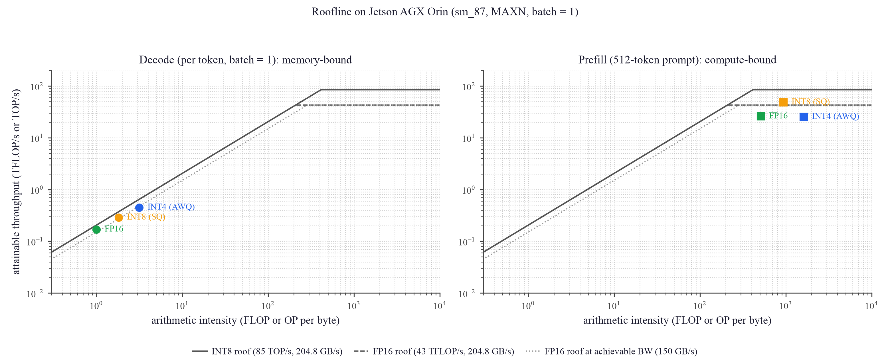
横轴：算术强度 AI（每字节的 FLOP/OP 数，对数轴）
竖轴：可达吞吐（TFLOP/s 或 TOP/s，对数轴）；斜线=带宽屋顶（实线 204.8 GB/s 峰值、点线 150 GB/s 可达），平顶=算力屋顶（INT8 85 TOP/s、FP16 43 TFLOP/s，均为 GPU 稠密值）
结果：decode 三精度 AI 仅 1.0–3.2，全部贴在带宽斜坡上，实测带宽 143–170 GB/s = 峰值的 70–83%；prefill 三精度 AI 512–1616，全部落在各自算力平顶下方 57–61%，且 INT4 贴的是 FP16 顶（25.5 vs FP16 26.0 TFLOP/s）而不是 INT8 顶
分析：脊点 = 43 TFLOP/s ÷ 204.8 GB/s ≈ 210 FLOP/byte。decode 的 AI 比脊点低 67–210×⇒ 纯访存墙，故 INT4 decode 的加速上限就是字节比 15.15/4.8 = 3.16×，实测 2.66× 的缺口来自带宽效率随权重变小而下降（82.9%→69.7%，固定开销占比上升）。prefill 的 AI 远高于脊点 ⇒ 计算墙：W4A16 的上限是 FP16 的 43 TFLOP/s 而非 INT8 的 85 TOP/s——TensorRT 权重量化会把 INT4 权重先反量化再做高精度点积（官方文档明示），所以 INT4 prefill 结构上不可能快过 FP16；INT8(W8A8) 用原生 int8 张量核、上限翻倍，才有 1.87×。
| 精度 | Decode AI FLOP/byte | Decode 实测带宽 （占 204.8 GB/s 峰值） | Prefill AI FLOP/byte | Prefill 实测吞吐 （占所用上限） | 所用算力上限 |
|---|---|---|---|---|---|
| FP16 | 1.00 | 169.7 GB/s（82.9%） | 512 | 26.0 TFLOP/s（60.5%） | 43 TFLOP/s (FP16) |
| INT8 (SmoothQuant) | 1.83 | 158.3 GB/s（77.3%） | 935 | 48.7 TOP/s（57.3%） | 85 TOP/s (INT8 原生) |
| INT4 (AWQ) | 3.16 | 142.8 GB/s（69.7%） | 1616 | 25.5 TFLOP/s（59.2%） | 43 TFLOP/s (反量化回 FP16) |
② 要让 INT4 的 prefill 也变快，必须换成 W4A8 之类"激活也量化"的方案，让 GEMM 真正跑在 int8/int4 张量核上；纯权重量化（W4A16）在计算密集阶段结构上无收益。
③ batch=1 单流下 prefill 已用掉 57–61% 的稠密算力，剩余空间有限，这与 sweep 观察到的"batch 无聚合增益"一致。
④ 若要动用 275 TOPS 里 DLA 的那 105 TOPS，需把部分子图放到 DLA（TRT `--useDLACore`），但 LLM 的 GEMM/attention 大多不被 DLA 支持——属推断，未实测。
1.5 Kernel 级剖析：decode 的时间与字节都花在哪
Roofline 说 decode 是访存墙、且只跑到峰值带宽的 ~70%。那 30% 的缺口具体丢在哪个 kernel？用 Nsight Systems 在真机上逐 kernel 剖析（关键：必须加 --cuda-graph-trace=node，否则 20 次计时迭代都在已捕获的 CUDA graph 里被折叠成一个区间，只有 3 次慢速 warmup 会被归因，得到的份额是错的）。
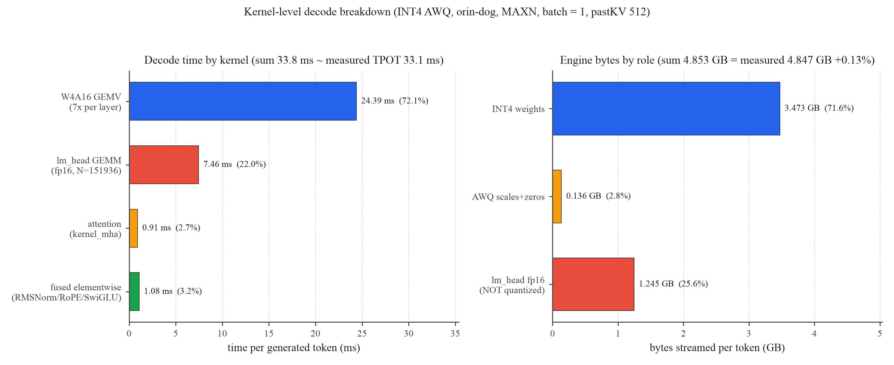
横轴：左=每生成 token 的耗时(ms)，右=每 token 需搬运的引擎字节(GB)
竖轴：左=kernel 类别，右=引擎权重按角色分类
结果：W4A16 GEMV 占 72.1%(24.39 ms)、lm_head 的 fp16 GEMM 占 22.0%(7.46 ms)、attention 仅 2.7%、已融合的 elementwise 仅 3.2%；四项合计 33.8 ms ≈ 实测 TPOT 33.1 ms。字节侧：INT4 权重 3.473 GB(71.6%)、AWQ scales+zeros 0.136 GB、lm_head 仍是 fp16 未量化，占 1.245 GB = 25.6%；合计 4.853 GB 与实测引擎文件 4.847 GB 仅差 +0.13%
分析：三点可执行结论。① lm_head 根本没被量化——AWQ 默认跳过输出层，于是它独占四分之一的 decode 字节；而且 M=1 却被调度到
tilesize64x96 的 GEMM kernel（grid=(1,1583,1)，1583×96=151968≈vocab 151936，据此确认其身份）。② 各 kernel 实测有效带宽：GEMV 147.9 GB/s(峰值 72.2%)、lm_head 166.9 GB/s(81.5%)、整体 146.5 GB/s(71.5%)——效率最低的恰是占比最大的 GEMV，这就是手写 kernel 的目标空间。③ TRT 已经把 RMSNorm/RoPE/SwiGLU 融合掉了（kernel 名 __myl_AddCasMulMeaAddSqrDivMulCasMulMulMul 即融合链）且 CUDA graph 已启用，故"算子融合 + 降 launch 开销"这条常规优化路线在此几乎没有空间（合计仅 3.2%）——这是个诚实的负结果。| 优化项 | 机理 | 字节变化 | 预测 TPOT / 吞吐 | 代价 / 风险 |
|---|---|---|---|---|
| A. 把 lm_head 也量化到 INT4 | 消掉 1.245 GB 的 fp16 输出层，decode 是访存墙 ⇒ 时间近似按字节等比下降 | 4.853 → 3.932 GB（−19%） | 33.1 → ≈26.8 ms 30.2 → ≈37.3 tok/s（+23%） | 输出层对量化更敏感，需用 n=210 基准实测精度损失 |
| B. 手写 W4A16 GEMV 提升带宽效率 ← 已被 1.6 节实测推翻 | 本以为 GEMV 只到「峰值」72.2% 尚有余量；但 该口径错了——分母应为实测可达带宽 152.3 GB/s，TRT 已达其 97.1% | 不变 | 原预测 +10% 不成立 真实上限 ≈ +2% 端到端 | 见 1.6 节：此路基本不通 |
| A + B 叠加 | B 已被推翻 ⇒ 实际可期的就是 A | −19% | ≈26.8 ms（+23%，来自 A） | — |
1.6 手写 kernel 对照：先量"上限"，再决定要不要优化
1.5 节给出的 B 项优化（手写 GEMV 把带宽效率从 72.2% 提上去）听起来诱人。但在动手写之前必须先回答一个问题：这台机器的 DRAM 到底能给多少带宽？「占理论峰值 72%」只有在硬件真能跑到 100% 时才意味着有 28% 可捞。于是先用自己写的纯流式读 kernel（1 GB、128-bit load）实测可达上限，再写三个版本的 W4A16 GEMV 与 TRT 对照。
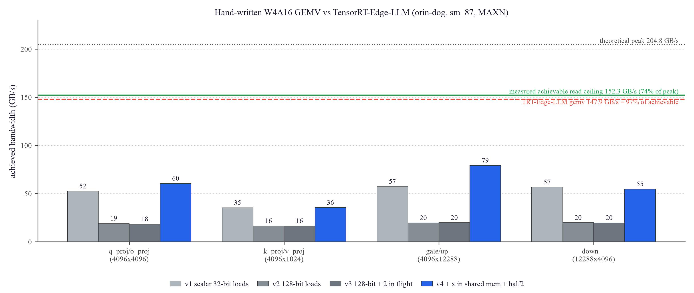
横轴：四种真实投影形状（K×N，取自 Cosmos-Reason2-8B 的 q/k/v/o 与 gate/up/down）
竖轴：实测有效带宽 (GB/s)；点线=理论峰值 204.8、绿实线=实测可达读带宽 152.3、红虚线=TRT 的 147.9
结果：这台 Orin 的实测可达读带宽只有 152.3 GB/s（理论峰值的 74.4%），两次运行 151.7 / 152.3（差 0.4%），并与 NVIDIA 论坛社区实测的 151.7 GB/s D2D 独立吻合。据此 TRT 的 GEMV 达到可达带宽的 97.1%。我最好的手写版本（v4：x 进 shared memory + half2 融合乘加）只有 79.2 GB/s = 可达的 52.0%，比 TRT 慢 1.87×
分析：① 我上一节的 B 项优化被自己的测量推翻——正确的分母是可达带宽而非理论峰值，TRT 的 GEMV 只剩 3.0% 余量，端到端约 +2%，手写 kernel 这条路基本不通。② 版本间的教训很典型：v2/v3 单纯把 32-bit load 换成 128-bit 反而更慢，因为真正的瓶颈不是 DRAM 而是逐元素重复读 x + 标量 int→fp16 转换；v4 把 x 放进 shared memory（一个 block 内 8 个 warp 复用）并改用 half2 后才提升 1.4–4×。③ 要再补上与 TRT 的 1.87× 差距，还需 AWQ/FasterTransformer 的
lop3 位技巧（直接拼出 fp16 尾数、免掉转换指令）+ 权重离线置换——而 TRT 已经做了这些。④ 真正的结论：decode 的优化杠杆不在 kernel，而在字节数（即 A 项：量化 lm_head）。诚实标注：v4 用 half2 累加，相对误差 0.1–0.7%（v1 用 float 累加为 0.04%）；若要产品化需改回 float 累加，会再损失一点速度。此微基准为独立 kernel、非端到端集成。
1.7 视觉编码器：多模态才是真实负载，它占 TTFT 的 1/4
前面所有性能数字都只测了 LLM。但这是个 VLM，真实请求是"若干帧图像 + 问题"，而视觉编码器从未被单独测量、且至今仍是未量化的 fp16（1.168 GB 引擎）。用 llm_inference --dumpProfile 拿到 TRT 自带的分段 GPU 时间，按帧数扫描（AV 场景对应多路相机）。
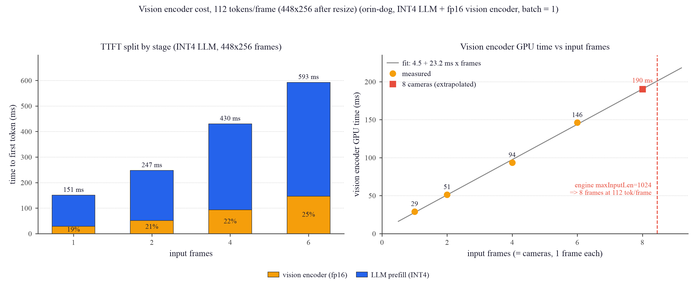
横轴：左=输入帧数(1/2/4/6)，右=输入帧数（视作每路相机 1 帧，含外推到 8 路）
竖轴：左=首 token 延迟 TTFT (ms)，按「视觉编码器 / LLM prefill」堆叠；右=视觉编码器 GPU 时间 (ms)，红虚线=引擎
maxInputLen=1024 的硬上限结果：视觉编码器耗时随帧数严格线性——拟合 4.5 + 23.2 ms×帧（R²=0.997），每帧 112 个 image token（本节用的 448×252 帧被 processor 缩到 448×256，14×8=112；见图 2）；它占 TTFT 的 19.3% → 24.7%（1→6 帧）。6 帧 TTFT 593 ms（视觉 146 + prefill 446）。外推 8 路相机：视觉 ≈190 ms、TTFT ≈775 ms
分析：① 视觉编码器是被忽略的四分之一，且是唯一仍跑 fp16 的部件——量化它是明确的下一步收益点。② 发现一个硬约束，且它取决于帧的长宽比：本节的 448×252 帧是 112 token/帧 ⇒ 8 帧 = 8×112+77 = 973 token，逼近引擎 maxInputLen=1024，9 帧装不下；而基准里另有 40 段 5:4 视频（448×358→448×352）是 154 token/帧，6 帧就已占到 1015/1024、只剩 9 个 token（补测见图 2 下半）。AV 的 6–8 路相机正好卡在上限，若要每路多帧（视频）必须用更大 maxInputLen 重建引擎。③ prefill 随帧数增长更快（≈65 ms/帧），因为每帧带来 112 个 token 进 attention —— 所以多相机场景的瓶颈在 prefill 而非视觉编码器本身。
visual_build 没有精度参数（只有 --onnxDir/--engineDir 与 token 上限），视觉编码器精度完全由导出的 ONNX 决定，而 ModelOpt 的量化默认跳过了视觉编码器。⟹ 要量化视觉编码器必须回云端重导 ONNX，本地无路可走。此项已排入待办，等凭据轮换后执行。口径说明：本节 TTFT 用 TRT 自报的分段 GPU 时间；
llm_inference 报的 generation "16.3 ms/token" 未采用——它把单个 decode step 的 32.93 ms 除以了 "Generated Tokens: 2"（其中一个 token 由 prefill 产出），而 32.93 ms 恰与 llm_bench 的 33.13 ms 吻合，故 TPOT 仍以 llm_bench 为准。6 帧视觉编码器两次测得 144.52 / 146.17 ms（差 1.1%）。
1.8 该缩精度还是缩模型？—— 2B vs 8B 的 Pareto
前面所有实验回答的是"用哪种精度"，但部署真正要回答的是"用多大的模型"。于是把 Cosmos-Reason2-2B 用与已部署 8B 完全相同的配置（int4_awq 骨干、lm_head 保持 fp16）量化部署，使唯一变量是模型规模，并在同一套 210 题基准上用同一个打分脚本评分。
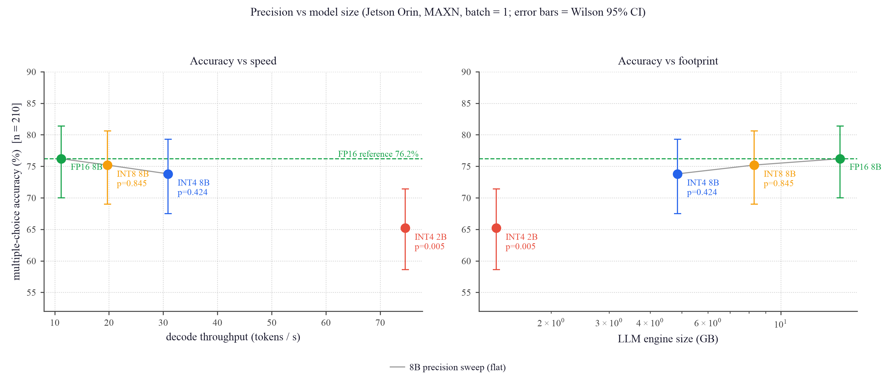
横轴：左=decode 吞吐 (tok/s)，右=LLM 引擎体积 (GB，对数轴)
竖轴：210 题多选正确率 (%)，误差棒=Wilson 95% CI，绿虚线=FP16 8B 的 76.2%
结果：8B 的三个精度点几乎连成水平线（76.2 → 75.2 → 73.8，全部 p>0.4 不显著），而 INT4 2B 掉到 65.2%（vs FP16 −11.0 pts、vs INT4 8B −8.6 pts），McNemar p=0.005 显著；代价换来的是 decode 再快 2.5×（30.9→74.6 tok/s）、引擎再缩 3.6×（4.85→1.36 GB）
分析：量化几乎免费，缩小模型不免费——这是本项目最可执行的一条选型结论：激进量化 + 保留大模型。只有在 8B 连 INT4 都装不下、或确实需要 >70 tok/s 的场景才用 2B，并且必须接受可测量的正确率损失。另外两个预测的验证：引擎大小的解析预测 1.355 GB vs 实测 1.364 GB（误差 0.7%）；但 TPOT 按字节比预测 9.3 ms、实测 13.41 ms——因为 2B 的有效带宽只有 101.7 GB/s = 可达上限的 67%（8B INT4 是 97%），模型越小带宽效率越低，所以字节比只能给出加速的上界。
--lm_head_quantization int4_awq，但在 Kaggle 的 2×T4（每张 14.56 GiB）上连试 5 次都失败，且是两面夹击：显存上限够高到把所有模块留在 GPU 时，承载 lm_head 的那张卡剩不下它需要的 1.16 GiB 临时张量 → CUDA OOM；把上限压低腾出空间，模块就外溢到 CPU → ModelOpt 的 AWQ 校准与 accelerate 的 offload hook 不兼容，直接 illegal memory access。更关键的是 max_memory 只约束初始权重放置——两次不同上限的 OOM 剩余显存完全相同（1006.81 MiB），说明量化状态之后照样把显存吃回同一水位，压总量根本不是有效杠杆。出路：需要单卡 ≥24 GB（L4 / A6000 / A100），让 8B 权重 + 1.16 GiB 临时张量无需分片即可容纳，从而同时避开两个失败模式。完整的 5 次实验记录见 PROBLEMS.md G3。
1.9 选 INT4 还是 INT8？取决于负载形状（修正了本页早前的表述）
前面 §1.1 给出的是"decode 看 INT4、prefill 看 INT8"。这在生成密集的负载上成立，但本项目真正的负载是 长多模态输入 + 极短输出（一张选择题：759 个输入 token，输出 1 个字母）——这种负载由 prefill 主导， 而权重量化对 prefill 无效（§1.4 已证 INT4 prefill ≈ FP16），INT8 走原生 int8 核才有 1.87×。所以必然存在一个交叉点。
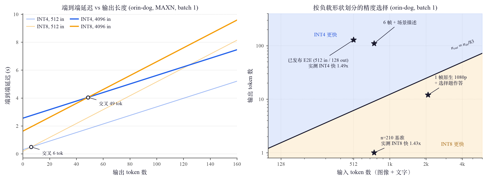
左图横轴：输出 token 数；左图竖轴：端到端延迟 (s)。粗线 = 4096 输入，浅线 = 512 输入；空心圈 = 交叉点。
右图横轴：输入 token 数（图像 + 文字，对数）；右图竖轴：输出 token 数（对数）。黑线 = 盈亏边界，橙区 = INT8 更快，蓝区 = INT4 更快，★ = 实测工作点。
结果：边界为 输出 token = 输入 token / 83，在 512/1024/2048/4096 四处稳定（81.8/83.2/83.4/84.2）。 n=210 基准（759 in / 1 out）从运行日志切出推理段实测 INT8 比 INT4 快 1.43×；而已发布的 512 in / 128 out 场景 INT4 快 1.49×。
分析：交叉点由"INT8 省下的 prefill 时间"与"INT8 每个输出 token 多花 19.1 ms"的比值决定。 图中 INT8 还背着 §H2 那 15% 的 opt 惩罚，所以这个结论是保守的——按各自最优配置，边界移到 输入/66，INT8 的获胜区更大。 ⇒ VLM 理解类任务（看图答短答案）应选 INT8；长文本生成类任务才选 INT4。
| 输入 token | INT4 prefill | INT8 prefill | INT8 省下 | 盈亏平衡输出长度 | 输入/输出 比 |
|---|---|---|---|---|---|
| 512 | 301.2 ms | 181.8 ms | 119.5 ms | 6.3 token | 81.8 |
| 1024 | 595.9 ms | 360.9 ms | 235.0 ms | 12.3 token | 83.2 |
| 2048 | 1212.2 ms | 743.4 ms | 468.8 ms | 24.6 token | 83.4 |
| 4096（≈1 帧原生 1080p） | 2554.6 ms | 1625.6 ms | 929.0 ms | 48.7 token | 84.2 |
顺带两个副产品：① TTFT@4096 = 2554.6 ms，事前预测 2650 ms（误差 −3.6%）—— 长输入 prefill 可由「matmul 2·P·n + attention 144·n²·d ÷ 实测 27.1 TFLOP/s」预测到 4% 内。加上视觉编码器约 0.85 s， 一帧原生 1080p 的 TTFT ≈ 3.4 s，即约 0.3 Hz——真实分辨率下这台机器是秒级而非帧级。 ② decode 改用 200 次迭代后 INT4 TPOT 为 30.78 ms，此前 10 次迭代报的 32.34/33.93 ms 偏高 4.8–9.3%（std 6.89 = 均值的 20%），属噪声。
1.10 跟得上车吗？—— 真实分辨率下的延迟预算
前面所有指标都是"多快"，这一节回答"够不够"。把 §1.1 的 prefill 曲线、§1.7 的视觉编码器线性律
（4.5 + 23.2 ms/帧 @ 448 patch/帧 ⇒ 0.0518 ms/patch）和 §1.9 的 TPOT 组合起来，按真实相机配置算可达帧率。
脚本 eval/perf/latency_budget.py，数据 latency_budget.json。
| 配置 | image token | 总输入 | 视觉 | INT4 总延迟 | Hz | INT8 总延迟 | Hz | 引擎装得下? |
|---|---|---|---|---|---|---|---|---|
| 现状基准：1 相机 × 6 帧 @448×252 | 672 | 759 | 144 ms | 618 ms | 1.62 | 462 ms | 2.17 | 是 |
| 6 相机 × 1 帧 @448×256 | 672 | 762 | 144 ms | 619 ms | 1.61 | 463 ms | 2.16 | 是 |
| 6 相机 × 1 帧 @960×544（视觉引擎每图上限 0.52 MP） | 3060 | 3150 | 638 ms | 2604 ms | 0.38 | 1906 ms | 0.52 | 是 |
| 1 相机 × 1 帧 @1080p（单帧原生） | 2040 | 2130 | 427 ms | 1724 ms | 0.58 | 1256 ms | 0.80 | 是 |
| 6 相机 × 1 帧 @1080p（真实车载配置） | 12240 | 12330 | 2540 ms | 12.4 s | 0.08 | 8.8 s | 0.11 | 否（超 4096 上限 3 倍） |
| 现状基准 + 场景描述输出（110 token） | 672 | 759 | 144 ms | 3959 ms | 0.25 | 5884 ms | 0.17 | 是 |
口径自证：基准场景模型算 INT4 618 / INT8 462 ms，端到端实测 703 / 493 ms
（§1.9，运行日志推理段 ÷ 110 请求）⇒ 模型低估 12.1% / 6.4%，因为它只算 视觉 + prefill + 输出×TPOT，
不含分词、词嵌入 gather、请求 IO 与主机侧开销。所以表中的 Hz 是乐观上界，真实值再低 6–12%。
末行是交叉点的独立验证：输出从 1 token 变成 110 token 后 INT4 反超 INT8（3959 vs 5884 ms）——
与 §1.9 的边界 110 > 759/83 = 9.1 一致。同一套数据两处自洽。
而量化补不上这个差距：最便宜场景要到 10 Hz 还需 4.6×，量化只给了 1.34×（§1.9）； 换 2B 模型 prefill 实测快 4.02× 也只到约 3.9 Hz，还要付 11.0 pts 正确率（§1.8，p=0.005 显著）。 根因在 §1.4 已经证明：这类负载是 prefill 主导、计算受限，而权重量化对 prefill 无效。
⇒ 正确的定位：事件触发的场景理解 / 风险解释 / 行车日志离线挖掘 / 面向驾驶员的问答—— 这些场景的自然频率是 0.1–1 Hz，本系统够用。不适合闭环控制与帧率级感知。 这也解释了为什么本项目部署的是 AV 栈的感知推理层而非规划层（§2.1 表 1）。
二、方法细节（可复现）
2.1 输入是什么、输出是什么（先看这个）
这一节回答最基本的问题：这套系统喂进去什么、吐出来什么。下面这张图里的图像、问题、输出全部是真实运行的原文（INT4 引擎、orin-dog 实测，产物在 eval/io_example/）。
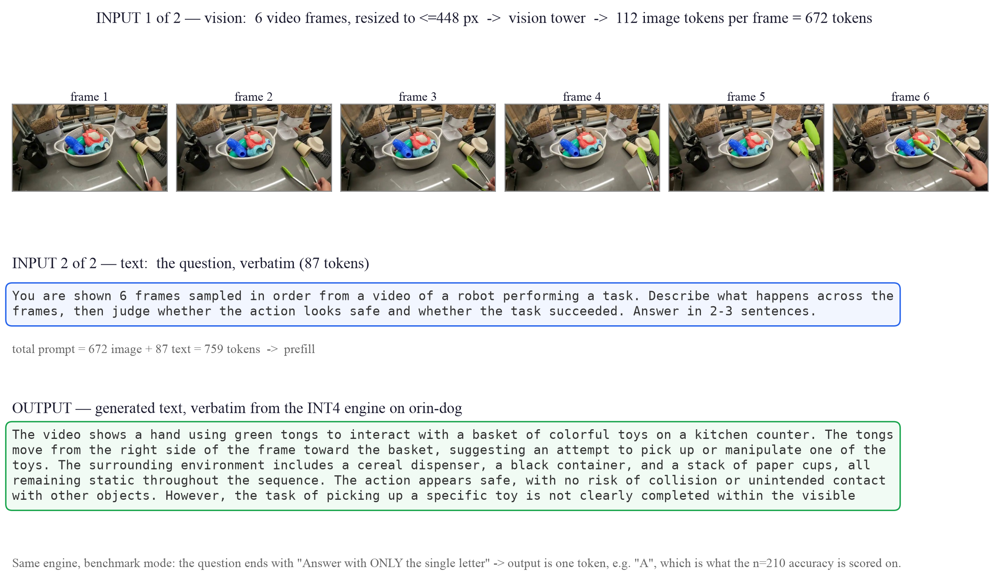
上排：输入之一 = 6 帧视频画面（我们把长边缩到 448 px → 实为 448×252，processor 再缩到 32 的整数倍 448×256），经视觉编码器 ViT（
qwen3_vl_vision，27 层，fp16）编码为 每帧 112 个 image token，共 672 个（完整预处理链见图 2）中排：输入之二 = 一段文字问题（本例 87 token）。两者拼成 759 token 的 prompt 送入 prefill
下排：输出 = 自回归生成的文字（本例生成到 110 token 上限被截断，故末句未完）
说明：同一个引擎在基准评测模式下，问题结尾改成"Answer with ONLY the single letter"，输出就退化为单个字母（如
A）——这正是 n=210 正确率所打分的对象。所以"输出格式"完全由 prompt 决定，模型本身始终是文本生成。| 层次 | 输入 | 输出 | 频率 / 在哪跑 |
|---|---|---|---|
| ① 运行时系统 = 部署完成后每来一个请求 | N 帧图像（长边 448 px；processor 再缩到 32 的整数倍 ⇒ 112 token/帧@448×256、154@448×352） ＋ 文字问题 prompt 总长 ≤ maxInputLen 1024（见图 2） | 文字：场景描述 / 风险判断 / 行动建议 格式由 prompt 决定（散文 或 单字母） | 每请求一次 Jetson Orin 上 |
| ② 构建流水线 = 我们做的"算法/工程"部分 | HF fp16 预训练权重（Cosmos-Reason2-8B） ＋ 校准集（cnn_dailymail 512 篇） | 2 个设备专用 TensorRT 引擎 LLM（INT4 4.85 GB / INT8 8.30 GB）＋ 视觉编码器（fp16 1.17 GB） | 一次性 量化在云 T4×2，建引擎在 Orin |
| ③ 评测 = 怎么证明它没坏 | 210 道带标准答案的选择题（每题 6 帧） ＋ 12 条 prompt（perplexity 辅助） | 正确率 + 95%CI + McNemar p；延迟/吞吐/功耗/能效 | 每次改配置重跑 Orin（云端只出 FP16 参考） |
我们做的不是训练模型，而是把 NVIDIA 已训练好的 8B 多模态模型压到能在一块 Jetson Orin 上实时跑：INT4 量化后引擎 4.85 GB、decode 30.9 tok/s、整机 ~23 W，并用带标准答案的官方基准证明正确率没有显著损失。
它不输出轨迹/控制量——那属于下游的 Alpamayo 1.5 VLA（见表 1），本项目部署的是它的 VLM backbone。
2.2 方法总览（端到端流程 · 为什么这么设计）

源权重 → 云端量化导出 ONNX → Orin 建引擎 → 边缘推理 → 性能/精度评测。
描述：预训练权重在云端一次性量化并导出为 ONNX，传到 Orin 编译成设备专用 TensorRT 引擎，再在边缘实测性能与精度两轴。
为什么这么设计（关键选择的理由）：
- 8B（16 GB）本地 3070（8 GB）装不下、Orin 无外网 → 量化这类一次性重活放免费云 T4×2。
- 以 ONNX 作跨平台中间表示 → 云端导出与边缘建引擎解耦、可复用。
- TensorRT 引擎按 GPU 架构（sm_87）特化 → 必须在目标设备本地构建。
- 精度与性能分两轴独立评测：精度以官方带标准答案基准的任务正确率为主指标（n=210，配 Wilson CI 与 McNemar），另用 FP16 参考的 perplexity / 一致率作更敏感的辅助指标；性能用合成序列测纯 prefill/decode，与内容无关。（早期因未接入带标注基准，曾只用相对退化口径——现已以真实基准为主。）
2.3 方法细节（配置与口径）
- 模型 / 权重：
nvidia/Cosmos-Reason2-8B（HuggingFace 门控，NVIDIA 预训练；我们只做推理量化，不训练/微调；revision 未 pin）。实测架构：36 层 · hidden 4096 · GQA 32/8 头 · RoPE 262144 · vocab 151936（Qwen3-VL-8B-Instruct 系 backbone）。 - 量化：NVIDIA ModelOpt 训练后量化(PTQ)。INT4 = AWQ(W4A16)、INT8 = SmoothQuant(W8A8)。校准集 = 工具默认的 CNN/DailyMail 3.0.0 前 512 篇 `article`（新闻文本、纯文本路径、非驾驶域——见讨论 caveat）。视觉编码器未量化（保 fp16）。
- 数据：精度评测用官方 Cosmos-Reason1-Benchmark（robovqa+robofail，n=210 选择题带标准答案）——视频采 6 帧(≤448px)作多图、三种精度同帧、算 MC 任务正确率+精度损失(带 Wilson CI/McNemar)；另有 12 条手写 prompt 的 perplexity 作细粒度辅助。性能用 llm_bench 合成序列。
- 设备 / 框架（实测版本）：Jetson AGX Orin Developer Kit（sm_87，统一内存 29GB，MAXN）· L4T R36.4.4 (JetPack 6.2) · CUDA 12.6.11 · TensorRT 10.7.0.23 · TensorRT-Edge-LLM v0.9.0@
1ac0f2b。云端量化/参考：Kaggle 2× Tesla T4 (sm_75)。 - 指标：延迟/吞吐 = llm_bench E2E（mean±std，warmup 3 + iter 10；prefill inputLen=512、decode pastKVLen=512）；功耗 = tegrastats 三轨之和；能效 = TPS ÷ W；精度损失 = FP16 模型对输出的 teacher-forced perplexity + token 一致率（相对退化口径，非纯量化误差）。INT4 已重跑复现（在 run-to-run 噪声内一致）。
模型来源、数据集、指标定义与测法、校准集及影响的完整可复现细节见 docs/METHODOLOGY.md。
三、思考讨论
② 看图答短答案 / 长上下文理解（输入多、输出少 —— 本项目基准与多相机 VLM 都属此类）→ INT8：prefill 快 1.9×、能效高 2.3×、功耗更低；n=210 基准实测比 INT4 快 1.43×。
③ 分界线：输出 token = 输入 token / 83（各自最优配置下为 /66）。根因见 §1.4——权重量化对 prefill 无效（INT4 prefill ≈ FP16），只有 W8A8 走原生 int8 核才提速。
两者在各自阶段既更快又更省电，按场景选档即可。
② perplexity（细粒度、辅助）：更敏感，能区分出 INT4 略优于 INT8（+9.8% vs +18.1%）；INT8（W8A8 连激活也量化）比 INT4（W4A16 纯权重）对校准更敏感。
③ 校准集消融（已做，推翻直觉假设）：原猜"新闻域校准错配拖累 INT8"。用域内校准集重量化 INT8 后反而暴跌（perplexity +244%、MC 84.5%）→ 假设被推翻。真正结论：校准集的覆盖度/质量（数量·长度·多样性）远比"域匹配"重要；512 篇长新闻是好的通用校准集，100 条短问题覆盖差→劣化。默认选择得到验证（含 confound：域与规模同时变）。
④ 口径：MC 正确率对比标准答案；perplexity 是已部署 TRT 引擎输出 vs FP16 的相对打分。
能用来干什么
- 可复用的边缘量化部署方法论——同套流程可把任意 TRTEdge 支持的 LLM/VLM 部署到任意 Jetson，并给出量化选型依据。
- 事件级（非帧率级）的车载场景推理系统——喂驾驶图像 + 问题，~30 TPS 生成 @ ~40 W。可达请求频率已量化（§1.10）：缩到 448 px 时 2.17 Hz、真实 1080p 单帧 0.80 Hz、6 相机原生 1080p 仅 0.11 Hz 且引擎装不下 ⇒ 适合事件触发的场景理解 / 风险解释 / 日志挖掘 / 驾驶员问答（自然频率 0.1–1 Hz），不适合闭环控制与帧率级感知（需 10–30 Hz，差 4.6× 以上，且量化补不上）。
- 完整的 INT4-vs-INT8 边缘权衡实证——延迟 / 吞吐 / 显存 / 功耗 / 能效 / 上下文扩展性 / 精度损失全维度。
诚实的边界
- 辅助 perplexity 指标曾有截断 confound（自查发现，2026-07-27 已解决）：原先 INT4 有 8/12、INT8 有 6/12 条撞生成上限，且 FP16 参考侧用的是另一个上限（Kaggle 160 vs Orin 200）——被比较的两侧预算不一致，而 INT4 被截得更多却报出更小的 perplexity 增幅，所以"INT4 退化小于 INT8"有可能是假象。已两侧统一到 512 重跑（Orin 侧截断降到 2/12；FP16 侧输出中位长度 719→1248 字符）：结果 INT4 +9.1% / INT8 +15.6%，结论方向不变、原结论成立，但截断确实把差距夸大过（INT8/INT4 之比 1.85× → 1.71×）。两版数字都保留在表 5，不覆盖历史。主指标 MC 正确率自始不受影响（210×3 条全部 end-of-sequence、全部可解析）。
- 输入长度只剩 0.9% 余量（事后才发现）：引擎
maxInputLen=1024是构建时钉死的；n=210 里最长的一题实测 1015 token（40 段 5:4 视频是 154 token/帧，6 帧就 924），只剩 9 个 token。日志无截断告警、210 条全部返回，故已发布正确率不受影响，但当初没算这笔账；要加帧数或加长题干必须以更大maxInputLen重建引擎（见图 2）。 - 基准范围：用 Cosmos-Reason1-Benchmark 的 robovqa+robofail（n=210，具身机器人推理，非驾驶）——这是 repo 内自带视频的全部；其余 3 子集(agibot/bridgev2/holoassist，共 300)仅有标注、视频需从外部源数据集下载匹配，官方 AV 子集未发布 → 全 510 需外部视频流水线(future work)。无 Cosmos-Reason2-Benchmark（不存在），故用同族的 R1-Benchmark 评测 R2 模型（标准做法）。视频按 6 帧@448 采样（非官方原生协议，绝对分不追求复现论文；三精度同帧→精度损失可比）。
- FP16 只能在 64GB goat 跑：32GB dog 上 FP16 既 build OOM(55GB)、载入也 OOM(15GB 引擎+缓存到顶) → FP16 的 TTFT/TPOT 在 goat 测；INT4/INT8 两机 <3% 已交叉复现，加速比取 goat 同机测量。
- 无轨迹预测：ADE/FDE vs CVM 属于 VLA 轨道（Alpamayo-R1-10B FP16），大工程，暂缓。
- 校准集：默认通用新闻(cnn_dailymail 512)。已做域内校准消融：域内小集反而使 INT8 暴跌(+244% ppl)→ 覆盖度/质量比域匹配更关键，默认选择得验证(消融含"域 vs 规模"confound)。
- 量化标的从 Alpamayo 改为 Cosmos，因 Alpamayo 只支持 FP16、不能量化（工具硬约束）。